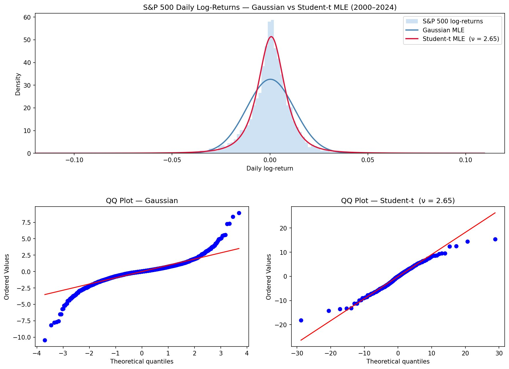
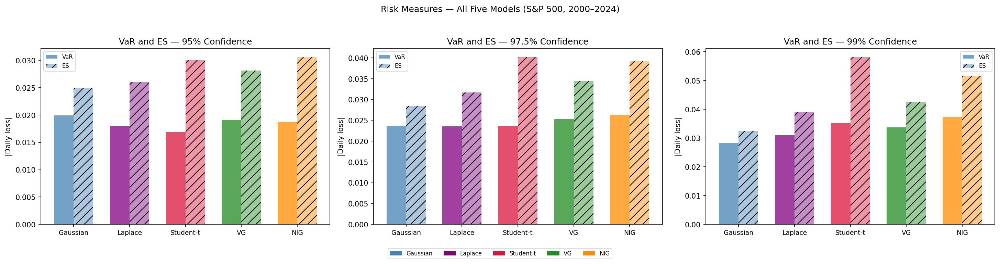
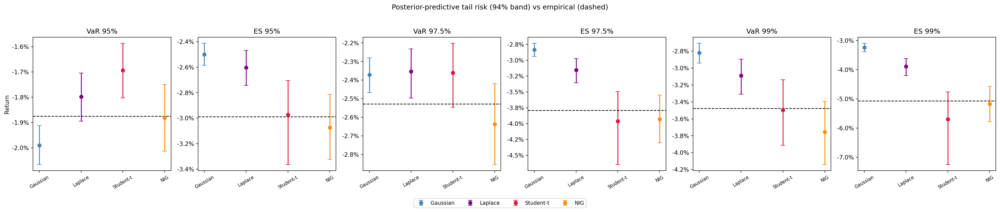
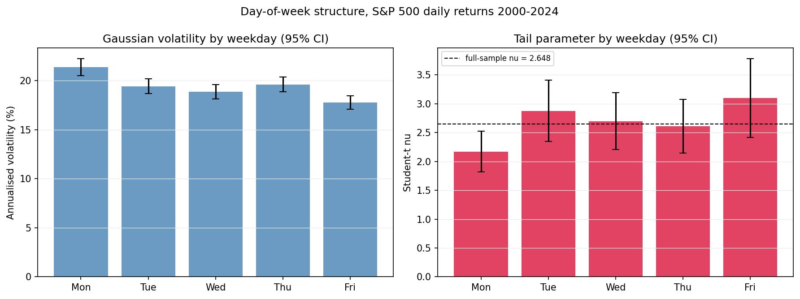
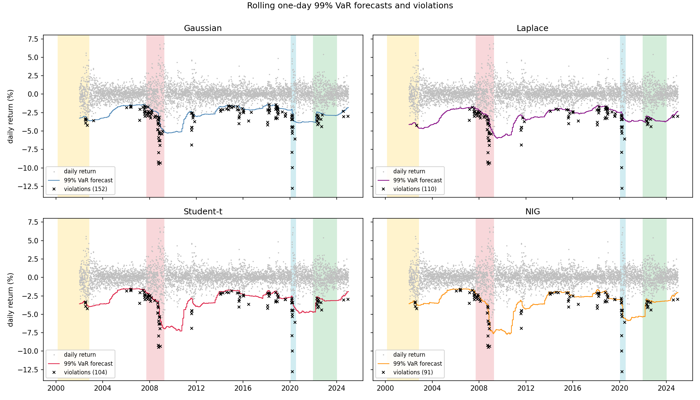
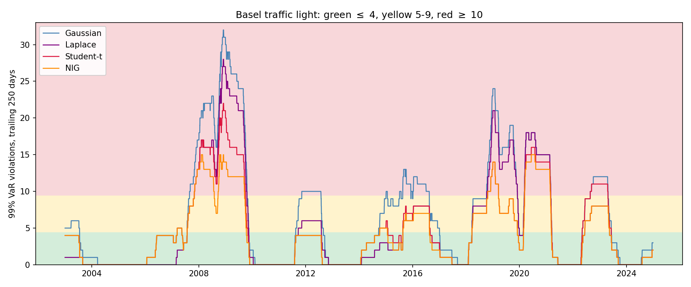

The Black-Scholes framework, and much of classical financial econometrics, assumes that daily stock returns are normally distributed. This project tests that assumption against a hierarchy of five models fitted to 25 years of S&P 500 daily log-returns (2000–2024), a sample that spans four distinct market crises.
The central question: by how much does the Gaussian model understate tail risk, and do Lévy-based distributions offer a statistically meaningful improvement? Every model is estimated twice, by maximum likelihood and again with full Bayesian posteriors (PyMC / NUTS), validated in-sample with posterior predictive checks, and finally sent out of sample through a rolling one-day VaR backtest scored with the Christoffersen (1998) framework and the Basel traffic light.
The answer has two halves. The heavy-tailed marginals genuinely fix the size of tail risk: the NIG passes every distributional test the Gaussian fails, and out of sample it cuts excess 99% VaR violations from a factor of 2.6 to 1.6. But no static distribution fixes the timing: every model fails the independence test, because violations arrive in bursts (2008, 2020) that only a dynamic volatility model could anticipate.
| Week | Topic | Status |
|---|---|---|
| 1 | Literature review and research proposal | Complete |
| 2 | Gaussian & Student-t MLE benchmarks | Complete |
| 3 | Five-model MLE; sub-period analysis; lead-up regression | Complete |
| 4 | Bayesian estimation (PyMC / NUTS) | Complete |
| 5 | Posterior predictive checks; convergence diagnostics | Complete |
| 6 | Calendar structure; quarterly parameter regressions | Complete |
| 7 | Rolling VaR backtest (Christoffersen) | Complete |
| 8 | Final write-up | Upcoming |
2 parameters. Black-Scholes baseline. Symmetric, thin tails.
2 parameters. Symmetric VG special case (θ = 0, ν = 1). Exponential tails.
3 parameters. Symmetric power-law tails via degrees of freedom ν.
4 parameters. Pure-jump Lévy process via Gamma subordination.
4 parameters. Lévy process via IG subordination. Semi-heavy tails, skew.
| Gaussian | Laplace | Student-t | VG | NIG | |
|---|---|---|---|---|---|
| ΔAIC vs Gaussian | 0 | −1,771 | −1,803 | −1,798 | −1,851 |
| KS test | rejected | borderline | borderline | passes | passes |
| 99% ES (in-sample) | −3.24% | −3.91% | −5.81% | −4.28% | −5.19% |
| Backtest 99% violations (58 expected) | 152 | 110 | 104 | (via Laplace) | 91 |
| Basel red-zone share | 30.8% | 18.7% | 17.9% | (via Laplace) | 14.1% |
The consolidated scorecard. From Week 4 onward the Variance-Gamma family is represented in the Bayesian and backtest work by its Laplace special case.
6,287 daily log-returns on the S&P 500 index (^GSPC), computed as rt = log(St / St−1), covering January 2000 to December 2024. Four market shock periods are tracked throughout the analysis.
Stylised sketch of the return series with the four shock windows shaded; the real series and fitted models appear in the figures below.


The NIG is the best fit overall (ΔAIC −1,851) and the only model not rejected by Kolmogorov-Smirnov. Sub-period fits split the four crises into two kinds: the GFC and COVID produce ν near 2.3–2.6 and NIG α near 18–26 (clusters of extreme single days), while the dot-com unwind and the rate-hike cycle look near-Gaussian (ν ≈ 6.5).

All four models sampled cleanly with NUTS (R-hat 1.00, effective sample sizes above 2,000); the NIG required a custom PyTensor log-density through the modified Bessel function K₁ so the sampler could differentiate through the full four-parameter distribution.



Week 8 assembles the final write-up. The conclusion the backtest completes: a better marginal fixes the size of tail risk, and only dynamics can fix its timing.
Basel Committee on Banking Supervision (2013). Fundamental Review of the Trading Book. Bank for International Settlements.
Christoffersen, P. F. (1998). Evaluating Interval Forecasts. International Economic Review, 39(4), 841–862.
Cont, R. (2001). Empirical Properties of Asset Returns: Stylised Facts and Statistical Issues. Quantitative Finance, 1(2), 223–236.
Madan, D. B., Carr, P. P. and Chang, E. C. (1998). The Variance Gamma Process and Option Pricing. European Finance Review, 2(1), 79–105.